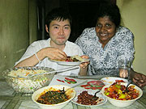
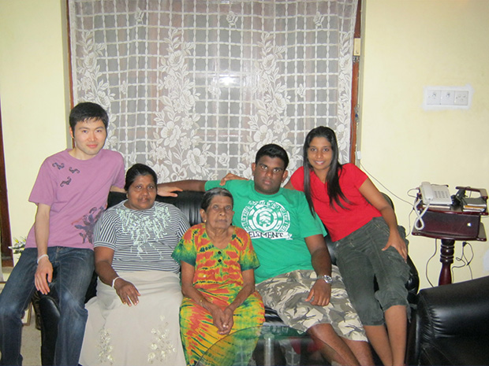
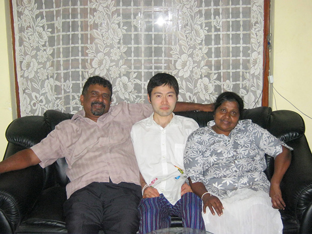
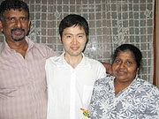
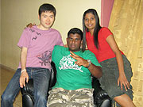
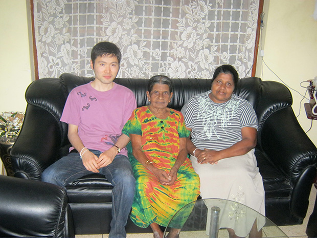

「スリランカという国の文化に興味があり、実際にスリランカの人々がどのように暮らしているかを体験してみたかったので、参加を決めました。
英語も勉強しつつ、ホームステイができるという点に惹かれました。
英語レッスンの先生は、とても知識が豊富で教えるのが上手い先生でしたので、ありがたかったです。
英語のみならず、スリランカという国について色々と教えて頂けました。
宿題も特に負担ではありませんでした。
ホームステイは、最高でした。
皆さんとても暖かく迎え入れてくれ、良く面倒をみてくれました。
今でも思い出すとホームステイ先に帰りたくなります。


低開発村視察は、経済の発展した国ではあまりみられない生活を目の当たりにすることができました。
学ぶことが多かったです。
スリランカは、仏教の国なので、ほとんどの人々は豊かな仏教文化で生きているイメージでした。
行った後もほとんど印象は変わりませんが、一部西洋化(westernised)されている人々もいることを知り、意外でした。
また、スリランカへぜひ行ってみたいです。
あまり現実的ではありませんが、出来ることなら本格的に住んでみたいです。
また同じホームステイ先の家族と再会したいので、いつかまた貴社のプログラムを使わせて頂きたいです。


ここまで自分でもスリランカを気に入るとは思ってなかったので、シンハラ語をいくつかでも覚えていけば良かったです。
次回までの課題とします。
以前タイに旅行したことはありますが、今回のホームステイは全く違う経験でした。
やはりスリランカという国に生き生きと住んでいる人々と触れ合うことができたのが一番の収穫でした。
今後もぜひ、欧米では決して体験できないアジア留学への斡旋を続けていって頂きたいです。
またお世話になることがあるかもしれません。
その時はまたよろしくお願い致します。」
